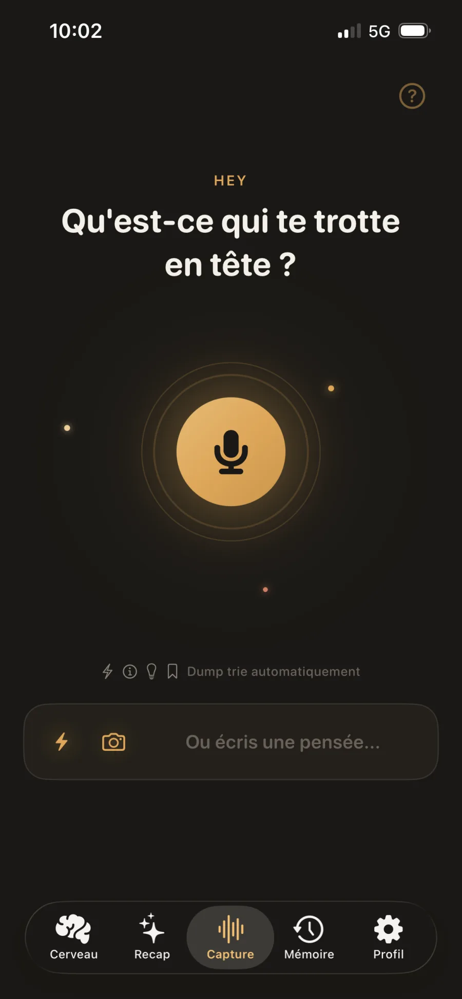
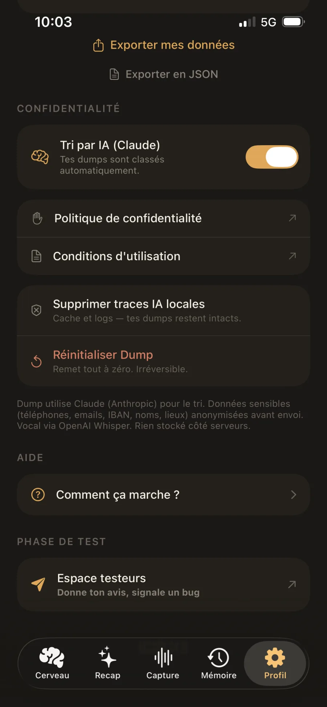
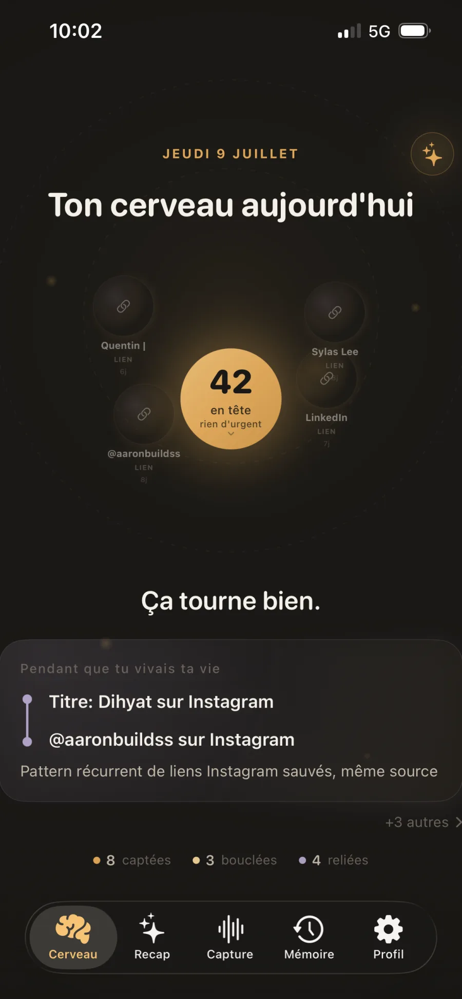
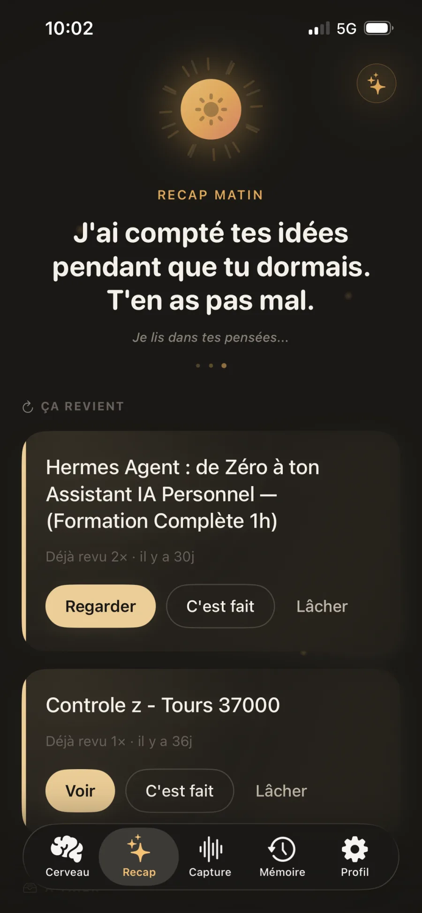
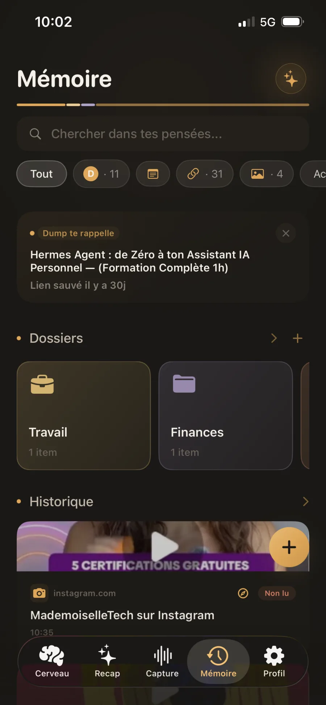
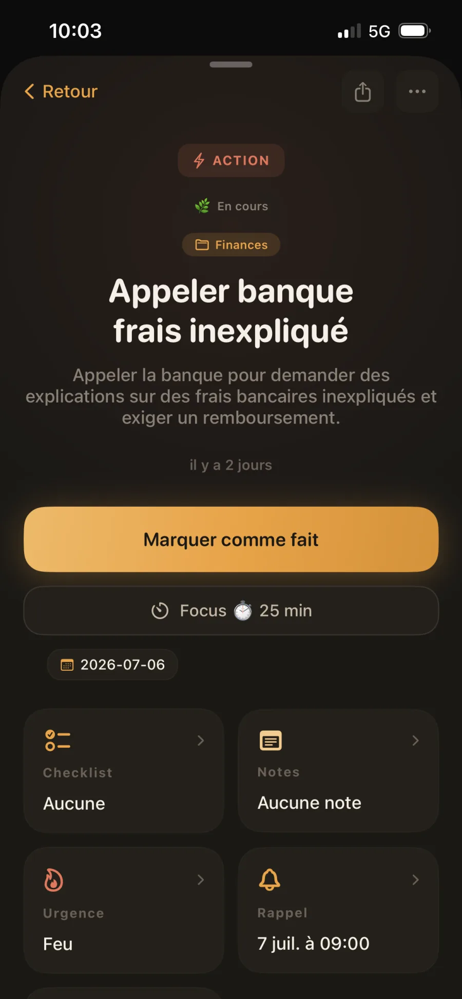
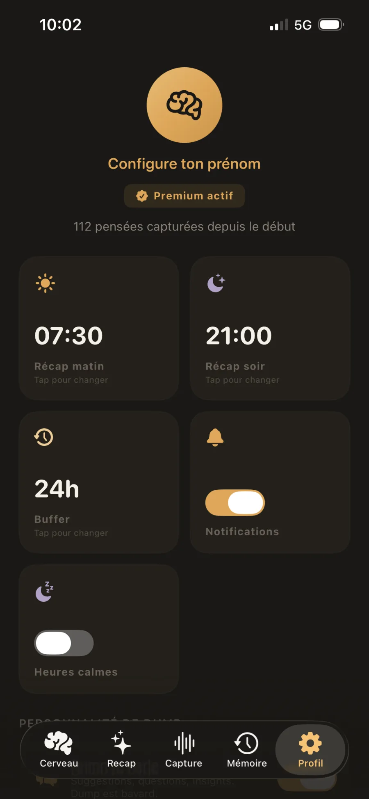
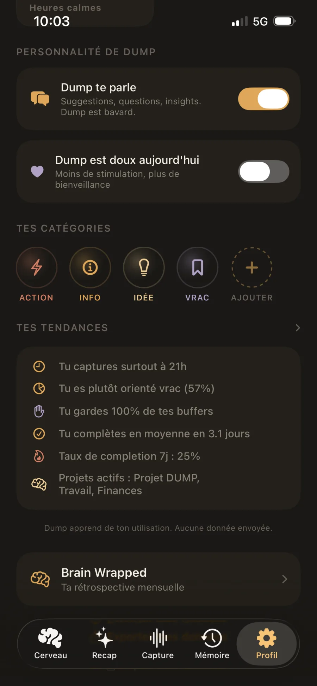

App · IA · 2026
DUMP
second cerveau iOS
On capture une idée, une note ou un vocal en vrac et on la perd, ou on ne la retrouve pas structurée. DUMP est un assistant cognitif : on parle ou on écrit en vrac, l'IA trie automatiquement. Particulièrement utile aux profils qui débordent d'idées et se dispersent (TDAH inclus), comme outil d'organisation au quotidien. Je l'ai d'abord construit pour moi.

DUMPL'idée
Second cerveau augmenté par l'IA
01 Le pourquoi
On capture une idée, une note, un vocal et on la perd, ou on ne la retrouve jamais structurée. Le constat de départ de DUMP : et si on pouvait tout jeter en vrac, et laisser l'IA ranger ? Pensé pour les gens qui débordent d'idées et veulent y voir clair un outil d'organisation, jamais de thérapie.
“ Je l'ai d'abord construit pour moi. ”

02 La démarche
a.Zéro friction
Pas de compte, pas d'email : l'app est utile dès la première seconde widgets et extension de partage compris.
b.La confidentialité d'abord
Les entités (noms, lieux, dates) sont anonymisées avant tout envoi ; les clés IA restent côté serveur, derrière un proxy Cloudflare.
c.L'IA au bon endroit
Whisper transcrit la voix, Claude classe (ACTION / INFO / IDÉE / VRAC) et suggère des connexions l'app apprend de tes corrections.
d.Crédible dès le jour 1
Design system, niveaux d'urgence, rappels datés, buffer d'impulsivité : pas une démo, un produit.
03 Le résultat
Sur TestFlight (build 2) mon projet le plus actif (503 commits, mise à jour juin 2026), design system v2, widgets « production ready ».
Galerie





